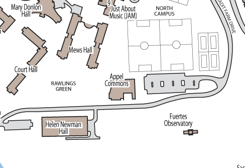

About Fuertes Observatory
CAS operates out of Fuertes Observatory (whose dome is the background image for this site), located on Cornell's north campus. Both the building and the telescope were built in the 1920s and are still in good condition. Some of our visitors have remarked that the "old-fashioned" look of the telescope is as much of an attraction as what they can see through it. The observatory also contains a small classroom, which we use for informal public talks and club meetings.
Our main observing instrument is the 12-inch refracting telescope located in the observatory dome. However, we often pass out binoculars for observing from the observatory roof. The binoculars not only allow our visitors a more interactive experience than the main telescope, but also provide views of objects too large for the 12-inch to see as a whole. We also have a 14-inch reflecting telescope (sometimes called the "C-14") that we can mount on the roof on rare occasions, but usually the deck vibrates too easily for the telescope to produce a good image.
Finding FuertesFuertes is located on a hill overlooking Helen Newman Hall and Appel Commons, easily reached from any part of the campus (click the image for a map of Cornell). For off-campus visitors, limited parking is available in the Appel lot across the street. We ask that you please turn off your headlights before you turn into a south-facing parking space; otherwise you may blind people at the observatory. |
 |
More Information
Fuertes History
Credits: Cornell Astronomical Society 2000 unless otherwise stated
- A brief history of the Fuertes Observatory at Cornell
- All about Estevan Fuertes
- The "Goldwin Smith" Observatory
- The "Barton Hall" Observatory